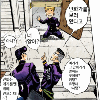

1화 나올때 그 다음주에 더 나오는줄 알고 봤다가 후회했음 드디어 나오네
25일부터 넷플에 순차적으로 공개할 예정
1화 나올때 그 다음주에 더 나오는줄 알고 봤다가 후회했음 드디어 나오네
25일부터 넷플에 순차적으로 공개할 예정
회전은 무한의 힘이야!!!!!!!!!
한국 더빙도 나름 ㄱㅊ더라
한국 더빙듣고 놀랐음. 꽤 잘하는데 성우도 어디서 자주 듣던 성우여서
말그리느라 좆빠졌겠다
드디어 제대로나오는거냐 시발 1년에 1편나오나했다
뇨호
립스틱은 꼭 적용시켜야했나?
보고싶은데 25일까지 숨참아야지 흡
큰거온다
ついに、僕の 時間が 動きだす
어서와라, 남자의 세계에
진짜 그거 애니로 빨리 보고싶다


앙 맨 썸?
6부 엔딩이 너무 별로였는데
7부 선공개한게 너무 재밌어서 다시 기대해본다 ㅋㅋ

똥 쌌다고...나(실제 대사임)
순차 공개면 앞으론 자주 나온단 소리임?
한주에 1화씩
뇨홓
6부까지보고 7부는 대통령 능력이랑 보스인것만봤는데 큰스포당한거임? 7부 그냥 봐도되나
어차피 능력이야 파훼하는게 재밌지 그 정도면 큰 스포는 아님 나도 너랑 같은 정보망 스포 당하고 만화책으로 먼저 봤는데 존잼이었음
대통령 보스인건 초중반부터 나오는거라 상관없음
7부는 대통령 보스인건 초중반부터 대놓고 나와서 괜찮고 그거말고도 더 중요한 스포가 있어서 그거 안봤으면 ㄱㅊ
그냥 죠죠는 하몬일때가 젤 재미낫음 스탠드 나오고 먼가 산으로감
하지만 인기 절정이였던 3부가 스탠드가 처음 나오고 대박친거라 포기못하지
ㄹㅇ 난 2부가 젤좋음
7부 재밌다곤 하는데 원피스 에넬전처럼 후반부가 재밌는거지 초중반은 노잼이긴해
나도 2부 야바위치고 대사날리는게 최애임ㅋㅋ
이제 쭉 나오는거지? 또 1화 싸고 도망가면 ㅅㅂ
근데 이거 왜 대체 1화만 먼저 공개하고 존나 오래 걸린거임?
1화 공개때도 2화만들고 있어서 늦음 이번에도 2&3스테이지 나오고 또 텀 있을거 같다라는 말이있긴함 검색해봐도 하나같이 말이 갈려서 헷갈린다
6부도 1쿨/2쿨/3쿨 텀 길었는데 7부는 더 길다라는 카더라가 있더라
뇨호
디에고 디오포즈하는거 감다살이네
난 일순후세계어쩌고할때 부터 별로였음
피자 모짜렐라 피지 모 짜렐라
어우 볼때마다 주인공들 입술색 적응안되네
만화책으로 볼땐 몰랐는데